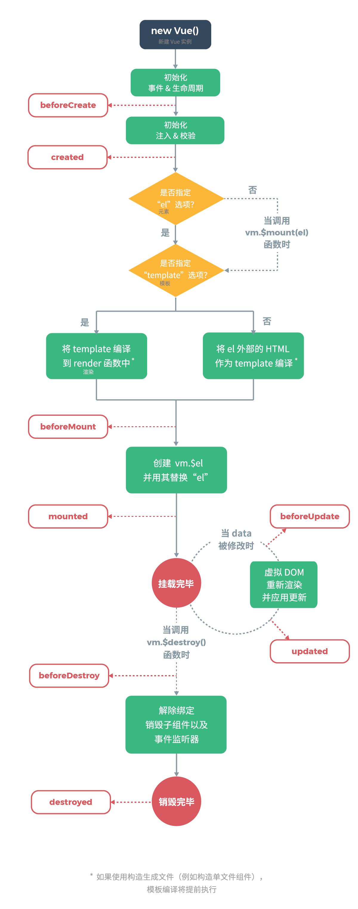

Vue以前听说过，有了解过一点。当时还在热衷于原生JavaScript去写一些方法的封装，不是为啥，就感觉这样很帅，后面多多少少接触了一些JQuery的用法，到现在为止，JavaScript原生封装的一些方法，该忘的都忘了。上一家公司需要用到Vue，所以就利用下班的时候学习Vue。有次公司部门的培训，一位大佬总结的实用技巧，感觉不错，在这里记录下来，方便以后查询，也与大家分享。
阮一峰老师写的：http://es6.ruanyifeng.com/
1、ES6新特性概览
2、Vue基础知识
3、Vue组件开发
4、Vue实用技巧
ES6新特性概览
1、箭头函数
var array = [1, 2, 3];
// 传统写法
array.forEach(function(v, i, a){
console.log(v);
});
// ES6
array.forEach(v = > console.log(v));2、类的支持
class Animal {
constructor(name) {
this.name = name;
}
sayName() {
console.log('My name is ' + this.name);
}
}
class Programmer extends Animal {
constructor(name) {
super(name); // 直接调用父类构造器进行初始化
}
program() {
console.log("I'm coding...");
}
}
var animal = new Animal('dummy'), wayou = new Programmer('wayou');
animal.sayName(); // 输出 'My name is dummy'
wayou.sayName(); // 输出 'My name is wayou'
wayou.program(); // 输出 'I'm coding...'3、字符串模板
// 产生一个随机数
var num = Math.random();
// 输出数字
console.log(`your num is ${num}`);4、解构
var [x,y] = getVal(), // 函数返回值的解构
[name,,age] = ['wayou','male','secrect']; // 数组解构
function getVal() {
return [ 1, 2 ];
}
console.log(`x:${x},y:${y}`); console.log(`name:${name},age:${age}`);5、默认参数值
// 传统的指定默认参数的方式
function sayHello(name){
var name = name || 'dude';
console.log('Hello ' + name);
}
// 运用ES6的默认参数
function sayHello2(name = 'dude'){
console.log(`Hello ${name}`);
}6、不定参数
// 将所有参数相加的函数
function add(...x){
return x.reduce((m,n) => m + n);
}
// 传递任意个数的参数
console.log(add(1,2,3)); // 输出：6
console.log(add(1,2,3,4,5)); // 输出：157、扩展参数
var peoples = ['Wayou','John','Sherlock'];
function sayHello(peo1,peo2,peo3){
console.log(`Hello ${peo1},${peo2},${peo3}`);
}
sayHello(...peoples); // 输出：Hello Wayou,John,Sherlock8、let与const关键字
for(let i = 0; i < 2 ; i++){
console.log(i);
}
console.log(i); 9、for of值遍历
var someArray = [ "a", "b", "c" ];
for (v of someArray) {
console.log(v); // 输出:a,b,c
}10、Set与Map集合
var s = new Set();
s.add("hello").add("goodbye").add("hello");
console.log(s.size);
console.log(s.has("hello"));
var m = new Map();
m.set("hello", 42);
m.set(s, 34);
console.log(m.get(s));
数组去重：[…new Set([1,2,3,3])]//如果数组里面的值是对象的话，就不可以了。11、Proxy，Proxy可以监听对象身上发生了什么事情，并在这些事情发生后执行一些相应的操作
// 定义被侦听的目标对象
var engineer = { name: 'Joe Sixpack', salary: 50 };
// 定义处理程序
var interceptor = {
set: function (receiver, property, value) {
console.log(property, 'is changed to', value);
receiver[property] = value;
}
};
engineer = Proxy(engineer, interceptor); // 创建代理以进行侦听
engineer.salary = 60; // 控制台输出：salary is changed to 60Vue基础知识
模板语法：
1、文本
<span>Message: {{ msg }}</span>
<span v-once>这个将不会改变: {{ msg }}</span>2、特性
<div v-bind:id="dynamicId"></div>3、修饰符，事件修饰符、按键修饰符、系统修饰符
4、HTML
<span v-html="rawHtml"></span>5、表达式
{{ number + 1 }}
{{ ok ? 'YES' : 'NO' }}
{{ message.split('').reverse().join('') }}6、缩写
<a :href="url">...</a>
<a @click="doSomething">...</a>7计算属性和侦听器
computed: {
reversedMessage: function () {}
}
watch: {
question: function (newVal, oldVal) {}
}8、条件渲染
<h1 v-if="type === 1">A</h1>
<h1 v-else-if="type === 2">B</h1>
<h1 v-else>C</h1>
// v-show 只是简单地切换元素的 CSS 属性 display
<h1 v-show="ok">Hello!</h1>9、class与style绑定
<div :class="{ active: isActive, 'danger': hasErr }"></div>
<div :class="[activeClass, errClass]"></div>
<div :class="[{ active: isActive }, errClass]"></div>
<div :style="{ color: actCol, fontSize: fs + 'px' }"></div>
<div :style="styleObject"></div>10、列表渲染
<ul id="example-2">
<li v-for="(item, index) in items" :key="index">
</li>
</ul>
<span v-for="n in 10">{{ n }} </span>
数组更新检测：push/pop/shift/unshift/splice等Vue组件开发
1、JavaScript文件编写组件
Vue.component("trip-nav", {
template: `<div class='step-tag'></div>`,
props: ['trip'],
data: function () {
return {
activeNo:1
}
},
computed: {
},
mounted() {
},
methods: {
}
});
HTML：<trip-nav :trip=‘tripInfo’></trip-nav>2、Vue文件编写组件
<template>
<div class='step-tag'></div>
</template>
<script lang="ts">
import {Component,Vue,Prop} from "vue-property-decorator";
@Component
export default class TripNav extends Vue {
activeNo = 1;
@Prop() trip;
get tripList() {
return [];
}
mounted() {
}
activeTrip() {
}
}
</script>
import tripnav from "./components/tripnav.vue";
components: {tripnav}Vue实用技巧
1、Vue实例会代理实例内data对象内所有属性
var data = { a: 1 }
var vm = new Vue({
data: data
})
vm.a === data.a // -> true2、camelCase和kebab-case的转换
Vue.component('child', {
props: ['myMessage'],
template: '<span>{{ myMessage }}</span>'
})
// 由于HTML属性是不区分大小写的，需要转为短横线隔开
<child my-message="hello!"></child>3、组件component实例作用域
Vue.component('child', {
props: ['msg'],
template: '<span>{{ msg }}</span>'
})
<child msg="hello!"></child>4、prop从父组件到子组件双向绑定
<!-- 默认为单向绑定 -->
<child :msg="parentMsg"></child>
<!-- 双向绑定 -->
<child :msg.sync="parentMsg"></child>
<!-- 单次绑定：注意单次绑定在数据传入后就不会同步后面的任何变化了，适合传入初始化数据的场景 -->
<child :msg.once="parentMsg"></child>5、事件绑定
使用 $on(eventName) 监听事件
使用 $emit(eventName) 触发事件
父组件可以在使用子组件的地方直接用 v-on 来监听子组件触发的事件6、命名约定
<!-- 自定义事件也是属于HTML的属性，所以最好使用中划线形式 -->
<child @pass-data="getData"></child>7、数据传递
<!-- 子组件通过$emit触发事件，触发的事件+传递的数据 -->
this.$emit('pass-data',this.childMsg)8、sync修饰符
<comp :foo.sync="bar"></comp>
this.$emit('update:foo', newValue)9、
$parent
$parent表示父组件的实例，该属性只读
this.$parent.parentMsg
$root
$root表示当前组件树的根VUE实例
如果当前实例没有父实例，此实例是其自己，该属性只读
this.$root.rootMsg
$children
$children表示当前实例的直接子组
this.$children 是一个数组
$refs
组件个数较多时,通过在子组件上使用ref属性,给子组件指定一个索引ID
<child1 ref="c1"></child1>
<child2 ref="c2"></child2>
this.$refs.c1
this.$refs.c2官网上一个，页面生命周期图

下面对这些页面生命周期中的部分事件简单介绍下
1、beforeCreate
创建前状态：在实例初始化之后，数据观测(data observer) 和 event/watcher 事件配置之前被调用
2、beforeMount
挂载前状态：在挂载开始之前被调用，相关的 render 函数首次被调用
3、beforeUpdate
更新前状态：数据更新时调用，发生在虚拟 DOM 重新渲染和打补丁之前。你可以在这个钩子中进一步地更改状态，这不会触发附加的重渲染过程
4、beforeDestroy
销毁前状态：实例销毁之前调用，此时实例仍然完全可用
5、created
创建完毕状态：实例已经创建完成之后被调用，实例已完成数据观测，属性和方法的运算， watch/event 事件回调。此时挂载阶段还没开始，$el 属性目前不可见
6、mounted
挂载结束状态：el 被新创建的 vm.$el 替换，并挂载到实例上去之后调用该钩子
7、updated
更新完成状态 ：组件 DOM 已经更新，所以你现在可以执行依赖于 DOM 的操作
8、destroyed
销毁完成状态：VUE实例指示的所有东西都会解绑定，所有的事件监听器会被移除，所有的子实例也会被销毁
这个页面生命周期，我就只能记得住常用的那三四个吧。这个生命周期，每次用到的时候，我都会去官网上面看。很是惭愧。。。